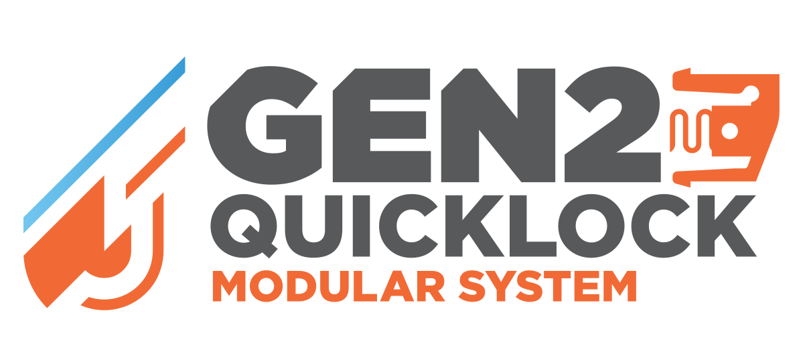

Loading…
Your build
Parts to print
Model links
Thanks for building!
The core GEN2 system is free and independent. The Club unlocks exclusive faceplate styles like EdgeLabel and Classic Pro, plus early access - and keeps new parts coming.
Join the Club on Printables
Join the Club on Thangs
Collection

3D
Build Studio
👆 Tap any part to see its name & download links - or click its color chip to try filament colors.
🖱 Drag to orbit · scroll to zoom · tap parts to color them
Loading parts…
Fix the build in the planner
This 3D guide pauses while the layout has a problem · it catches up automatically the moment the planner board is fixed.